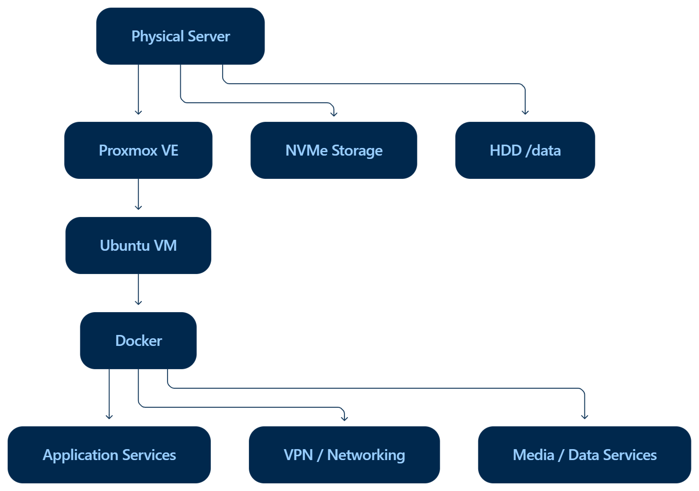

Home Virtualization Server
Personal Infrastructure Project
Building and maintaining a home server for virtual machines, containerized services, and hands-on troubleshooting.
- Proxmox VE
- Ubuntu Linux
- Docker
- Networking
- DNS / VPN
- Storage
- Troubleshooting
How it fits together
Proxmox VE hosts an Ubuntu virtual machine, which runs Docker services. The physical server also provides NVMe storage and an HDD mounted at /data.

The idea
Run a personal environment that I can configure, maintain, and learn from over time. It brings virtualization, Linux administration, containerized applications, and storage into one working system.
What I set up
- Configured Proxmox virtual machines and an Ubuntu environment for Docker services.
- Set up static addressing, DNS, VPN access, storage mounts, and permissions.
- Maintained application and media services, investigating issues through logs and system behaviour.
- Documented configuration and recovery steps so troubleshooting remains repeatable after updates or failures.
Keeping it running
My troubleshooting follows the layers of the system, from the application down to its dependencies.
Applications & containers
Inspect service logs, container status, and configuration when an application fails to start or behaves unexpectedly.
Storage & permissions
Check mounts, file paths, available space, and permissions when a service cannot access its data.
Networking & access
Review addressing, DNS, and VPN connectivity when a service is running but cannot be reached.
What I took from it
The biggest thing this project has taught me is not to troubleshoot a service in isolation. A problem that looks like an application issue can actually come from a mount, a permission, DNS, or the network, so I’ve become much more comfortable working through the system layer by layer instead of jumping straight to a fix.
Project scope
This is an ongoing personal infrastructure project rather than an enterprise production environment. The architecture is shown at a high level so the portfolio communicates the system design without exposing private network details or configuration values.